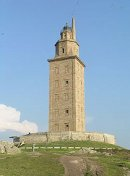
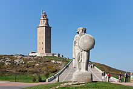
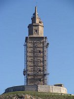

La Torre de Hércules es una torre y faro situado en la península de la ciudad de La Coruña, en Galicia (España). Su altura total es de 68 m y data del siglo I. Tiene el privilegio de ser el único faro romano y el más antiguo en funcionamiento del mundo. Es el segundo faro en altura de España, por detrás del Faro de Chipiona. El 27 de junio de 2009 fue declarado Patrimonio de la Humanidad1 por la UNESCO.
Hay varias leyendas relacionadas con su construcción. Una de ellas cuenta que Hércules llegó en barca a las costas que rodean actualmente la Torre, y que fue precisamente allí el lugar donde enterró la cabeza del gigante Gerión, después de vencerle en combate. Esta leyenda representa la continuidad del legado romano de Hércules sobre el legado tartésico-fenicio de Gerión.
Asimismo, historiadores identificaron la torre como el lugar donde pudo haber estado situada la Torre de Breogán,[cita requerida] una torre mitológica que aparece entre otros en el ciclo mitológico irlandés (más concretamente en el Leabhar Ghabhála Érenn), y desde la que Ith, hijo de Breogán, habría avistado las costas de Irlanda. Esta sospecha viene acrecentada por el topónimo Brigantium, que es altamente posible que derive de Breogán, y tiene sustento en la tradición de los romanos a la hora de identificar a sus propios dioses o héroes, en este caso Hércules, con los autóctonos.
La mitología dice que «hubo un gigante llamado Gerión, rey de Brigantium, que obligaba a sus súbditos a entregarle la mitad de sus bienes, incluyendo sus hijos. Un día los súbditos decidieron pedir ayuda a Hércules, que retó a Gerión en una gran pelea. Hércules derrotó a Gerión, lo enterró y levantó un túmulo que coronó con una gran antorcha. Cerca de este túmulo fundó una ciudad y, como la primera persona que llegó fue una mujer llamada Cruña, Hércules puso a la ciudad este nombre»
La Torre de Hércules fue construida por los romanos como faro de navegación en el siglo II d. C., comprendida la construcción entre los reinados de Nerón y Vespasiano en función de los hallazgos de fragmentos de terra sigillata y vasos de paredes finas datables entre los años 40 y 80 de nuestra era[cita requerida]. La inscripción al pie de la torre y las referencias documentales sobre la ciudad de Brigantium (La Coruña) revelan la existencia de un faro de la época de Trajano. En su base se encontró una piedra votiva con la inscripción en latín MARTI AVG.SACR C.SEVIVS LVPVS ARCHTECTVS ÆMINIENSIS LVSITANVS.EX.VO, lo que ha permitido identificar al arquitecto autor de la misma como Cayo Sevio Lupo, originario de Aeminium, hoy Coímbra, en Portugal.
La mención más antigua a la Torre se encuentra en el Historiæ adversvm Paganos de Paulo Orosio, escrito hacia el 415–417 d. C., que dice: «Secvndvs angvlvs circivm intendit, ubi Brigantia Gallæciæ civitas sita altissimvm farvm et inter pavca memorandi operis ad specvlam Britanniæ erigit».
La torre perdió, posiblemente, su uso marítimo durante la Edad Media al convertirse en fortificación. Fue en el siglo XVII (1682) cuando el Duque de Uceda encargó la restauración arquitectónica al arquitecto Amaro Antune, que construyó una escalera de madera que atravesaba las bóvedas hasta la parte superior, donde se sitúan dos pequeñas torres para soportar los fanales. En el reinado de Carlos III se realizó la reconstrucción completa. La obra neoclásica se terminó en 1791 bajo la dirección de Eustaquio Giannini.
La torre era, antes de comenzar la reforma, un cuerpo prismático con base cuadrada; en el exterior presentaba un muro de piedra con dos puertas en la parte baja y ventanas asimétricas que la recorrían hasta el piso superior, y una mordiente helicoidal que llegaba hasta la parte superior. En su interior conservaba la vieja estructura romana, pero con escaleras de madera que pertenecían a la restauración de edificio, armonizándola en su decoración con marcos superiores de puertas y ventanas.
La fachada actual de la torre es el fruto de la remodelación neoclásica efectuada en el siglo XVIII. En el año 2007, fue elegida candidata para engrosar la lista de bienes culturales Patrimonio de la Humanidad. El 9 de septiembre de 2008 se hermanó con la Estatua de la Libertad de Nueva York y el día 25 de ese mismo mes con el Faro del Morro de La Habana, el más antiguo de América y uno de los emblemas de Cuba.
Desde el 15 de enero de 2012, la Torre de Hércules permanece cerrada de manera urgente, según la edil de Turismo Luisa Cid, para acometer unas obras. Lo cierto es que a día de hoy no hay obras de ninguna clase, y tampoco hay fecha prevista para su reapertura.
El Parque Escultórico de la Torre de Hércules es un museo al aire libre que, en su recorrido, se pueden contemplar más de 15 obras de importantes artistas del siglo XX como Francisco Leiro o Manolo Paz en un gran espacio natural.
La Torre de Hércules fue declarada por la Unesco Patrimonio de la Humanidad el día 27 de junio de 2009 en la ciudad de Sevilla. La candidatura a obtener esta distinción, recibió un amplio apoyo popular e institucional.3 La noticia fue acogida con alegría entre todos los coruñeses concentrados en la plaza de María Pita y alrededor de la propia torre, quienes aguardaron durante horas la designación.